Noticias
Banksy sorprende a Glasgow con 'Cut & Run', su primera exposición oficial en 14 años
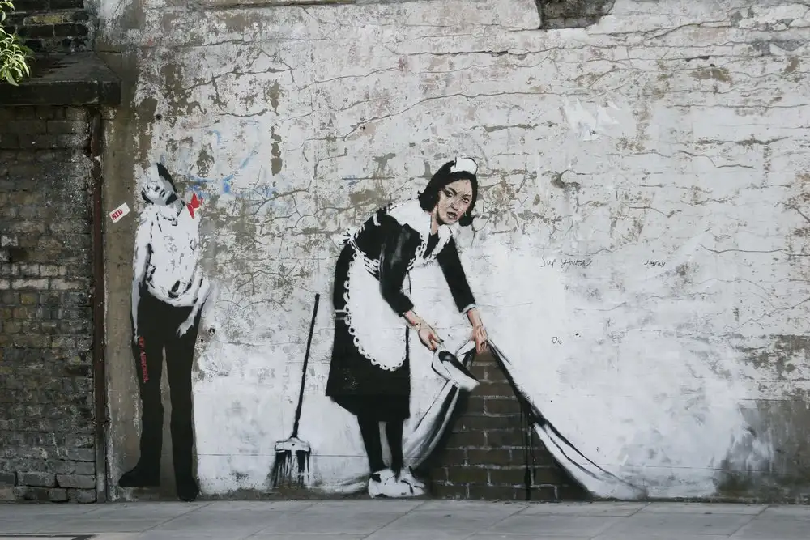
La Corte Suprema de EE.UU. falla contra Warhol en disputa por derechos de autor de retrato de Prince.
La Corte Suprema de Estados Unidos falló contra Andy Warhol por infringir los derechos de autor al crear serigrafías de Prince basadas en una fotografía. Se rechazaron los argumentos de transformación presentados por la Fundación Andy Warhol.

Un experto en historia afirma haber identificado el puente asociado con la famosa pintura de la Mona Lisa.
Un destacado experto en historia del arte ha realizado un importante descubrimiento al afirmar haber identificado el puente que se cree está asociado con la icónica pintura de la Mona Lisa. Este hallazgo arroja nueva luz sobre el contexto histórico y geográfico en el que fue creada la famosa obra maestra de Leonardo da Vinci.

Françoise Gilot: Revelando el Lado Oscuro de Picasso, la Artista que Amó y Abandonó al Genio
Françoise Gilot, artista y expareja de Pablo Picasso, revela el lado oscuro del genio en su relato. Expone la complejidad de su relación y el doloroso abandono. Esta revelación ofrece una nueva perspectiva sobre la vida y obra de ambos artistas.
5 elementos ocultos en las célebres pinturas de Vermeer: descubriendo los misterios ocultos en sus pinturas
Explora el fascinante mundo de Johannes Vermeer y desentraña los secretos que se esconden en sus célebres pinturas. Sumérgete en la belleza de su arte y descubre los enigmáticos elementos que añaden profundidad y significado a sus obras maestras. Desde cortinas misteriosas hasta objetos simbólicos, acompaña a Vermeer en su viaje artístico y descubre los misterios ocultos que dan vida a sus pinturas.
 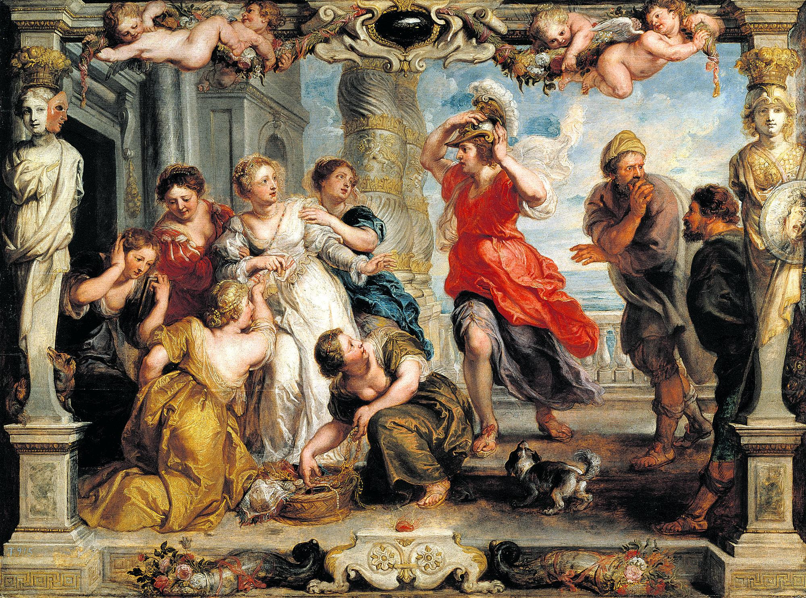
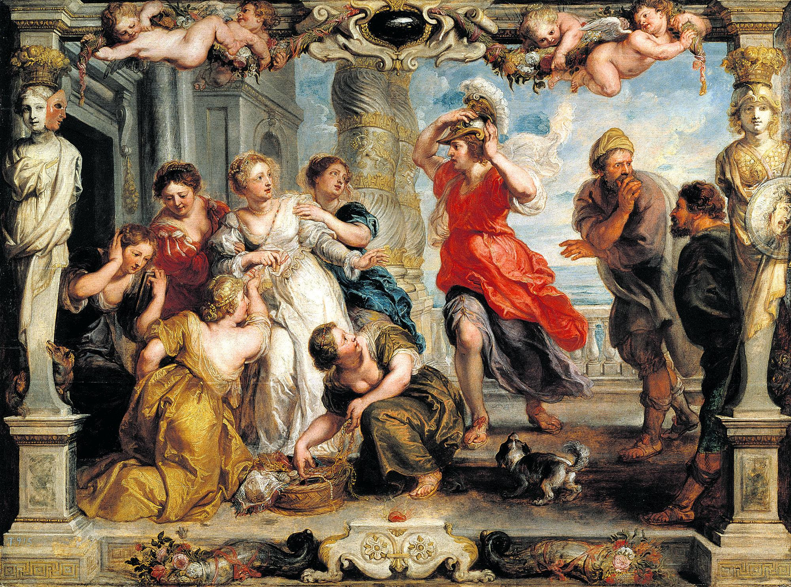


 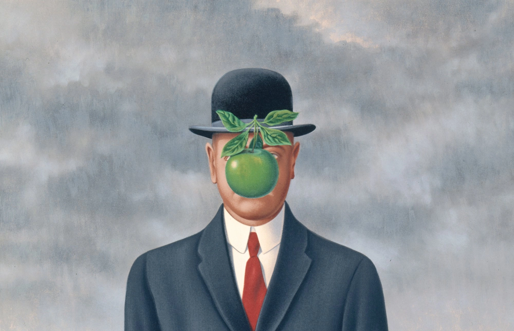
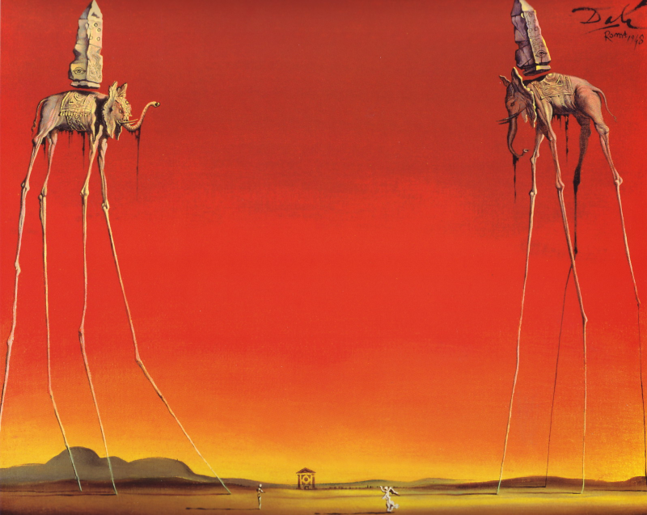
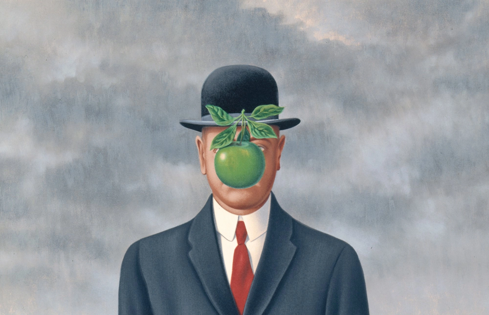
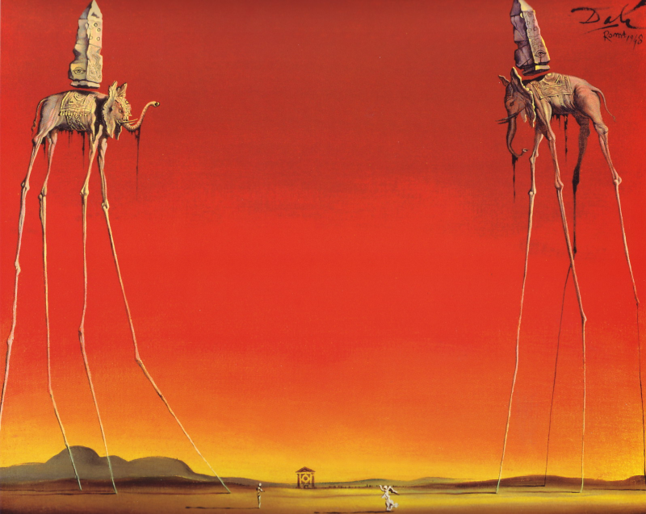

 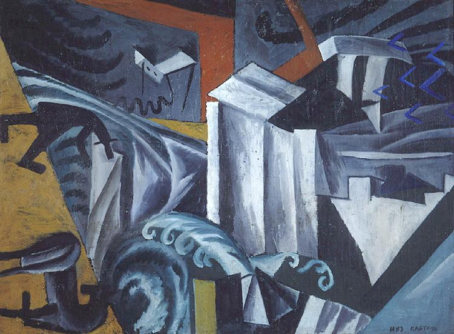
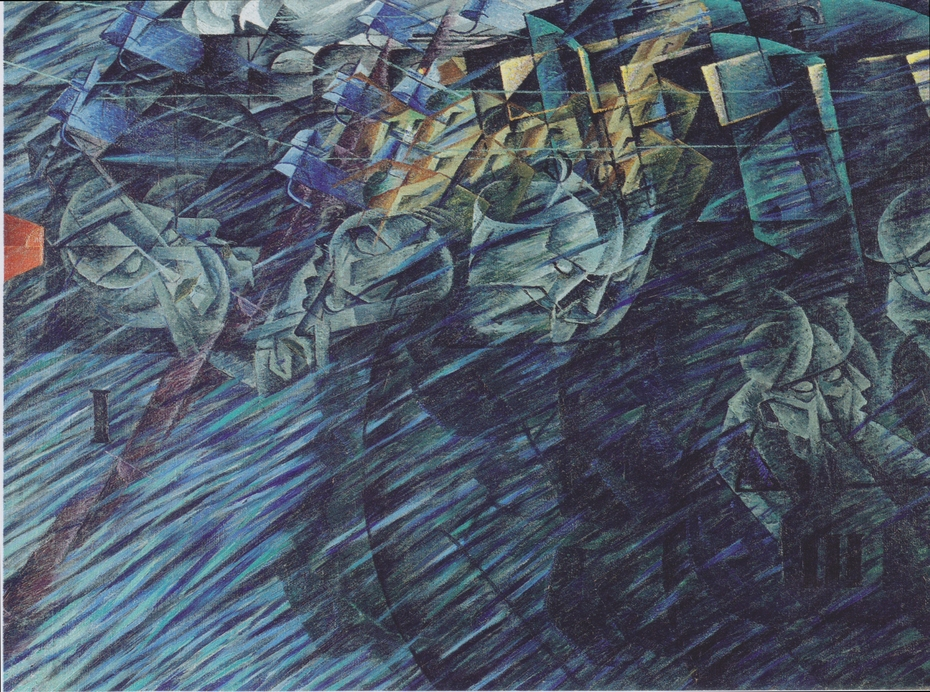
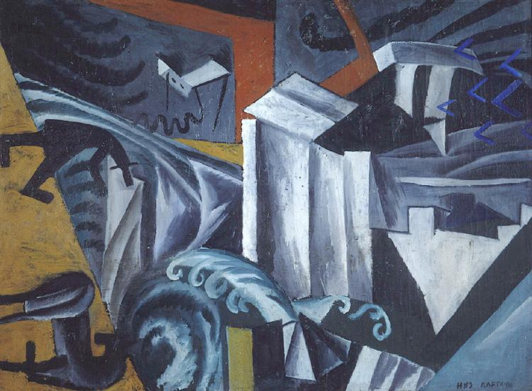
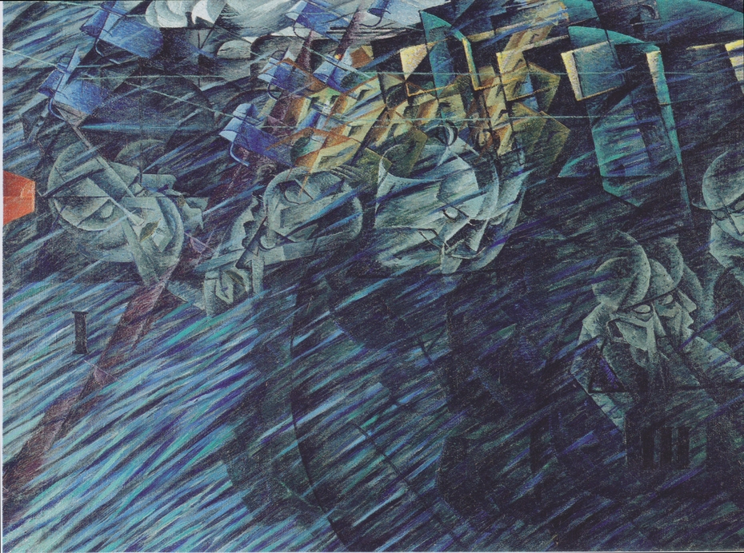

 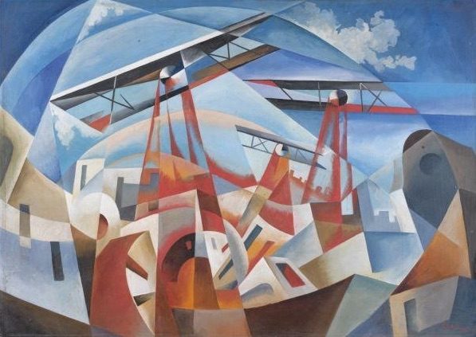
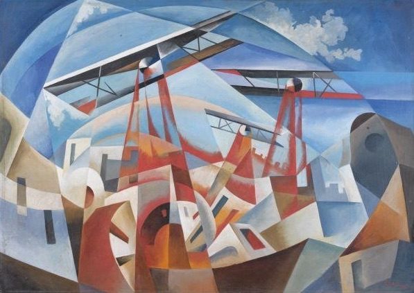